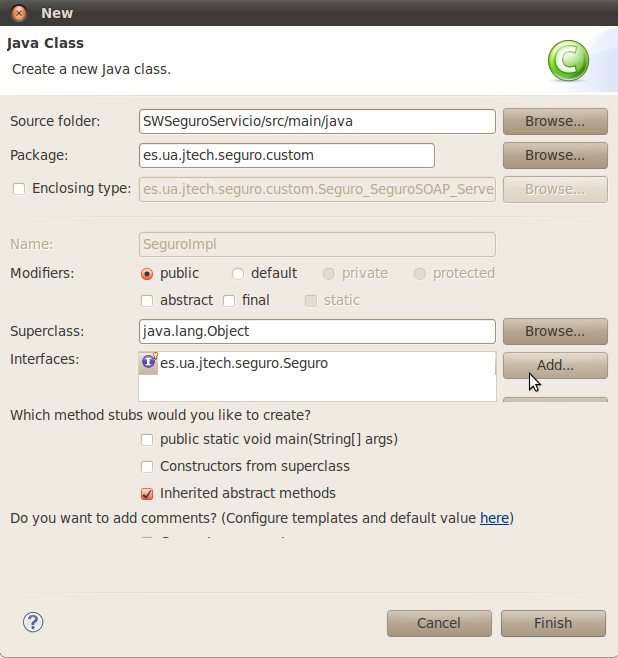
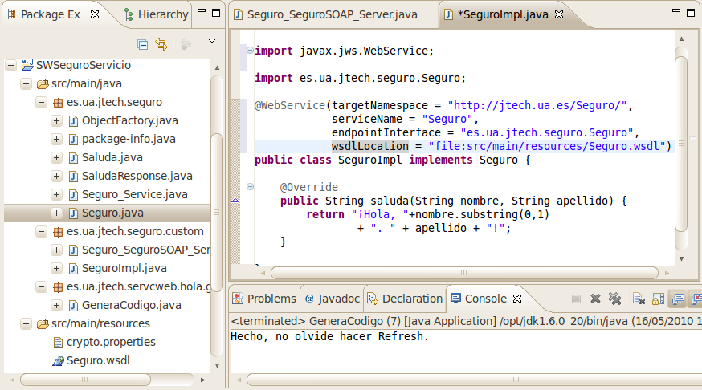

Seguridad a nivel de mensaje. Firma digital
Firma digital de mensajes
En las próximas secciones vamos a firmar y encriptar partes del mensaje SOAP. Este tipo de seguridad es a nivel de mensaje y es necesario cuando los mensajes van a pasar por distintos nodos que procesarán sus cabeceras, o incluso partes del contenido. Por otro lado, si esto no es necesario se podría realizar seguridad a nivel de transporte, que consiste simplemente en realizar una conexión SSL entre el cliente y el servidor. El mensaje iría cifrado a través de ella, y además se habrá comprobado la autenticidad de cliente y de servidor. Sin embargo, una vez llegado al servidor, el mensaje será visto y podrá ser modificado. Si de ahí tiene que ser enviado a otro sitio, la seguridad dependerá de si confiamos en dicho servidor o no. Para este tipo de situación, SOAP nos permite encriptar y firmar partes del mensaje, manteniendo sus cabeceras en formato XML sin encriptar. Axis2 necesita el plugin Rampart para implementar este tipo de seguridad.
Cliente con CXF
Vamos a copiar el proyecto SWCliente y pegarlo con el nombre SWSeguroCliente. Empecemos por modificar su pom.xml, cambiándole el Group Id y el Artifact Id a "SWSeguroCliente". En la sección de dependencias añadimos las versiones 1.5 de rampart-core y rampart-policy, del dominio org.apache.rampart. Si las añadimos desde el editor gráfico, no hay que olvidar borrar las etiquetas type y scope. Guardamos el pom.xml y esperamos hasta que las dependencias se hayan descargado (Bulding workspace, indicado abajo a la derecha) y el proyecto no indique ningún error.
Repetimos lo mismo con el proyecto del SWServicio, copiándolo como SWSeguroServicio, y realizando los mismos cambios en el pom.xml: el Group Id y Artifact Id a "SWSeguroServicio", y las dos dependencias de rampart.
Ahora volvemos a SWSeguroCliente y cambiamos el nombre de su WSDL a Seguro.wsdl con el botón derecho sobre el archivo, Refactor / Rename. Una vez renombrado lo editamos y cambiamos todas las ocurrencias de la cadena "Servicio" por "Seguro". (Incluido ServicioSOAP a SeguroSOAP).
Ahora vamos a añadir los nombres de espacio correspondientes a las políticas que vamos a utilizar. En la etiqueta <wsdl:definitions añadimos, después del xmln:soap, tns, wsdl y xsd, los siguientes atributos:
xmlns:sp="http://docs.oasis-open.org/ws-sx/ws-securitypolicy/200702"
xmlns:wsp="http://www.w3.org/2006/07/ws-policy"
xmlns:wsu="http://docs.oasis-open.org/wss/2004/01/oasis-200401-wss-
wssecurity-utility-1.0.xsd"
Después añadimos la etiqueta:
<wsp:PolicyReference URI="#p1" wsdl:required="true"/>
justo a continuación de la línea <wsdl:operation name="saluda">, con lo cuál estamos indicando que se aplique la política con identificador "p1" a la operación saluda. La definición de la política la vamos a insertar entre la etiqueta <wsdl:definitions.../> y la etiqueta <wsdl:types>, y va a consistir en:
<wsp:Policy wsu:Id="p1">
<sp:AsymmetricBinding>
<wsp:Policy>
<sp:InitiatorToken>
<wsp:Policy>
<sp:X509Token sp:IncludeToken="http://docs.oasis-open.org/ws-sx/
ws-securitypolicy/200702/IncludeToken/AlwaysToRecipient">
<wsp:Policy>
<sp:WssX509V3Token10 />
</wsp:Policy>
</sp:X509Token>
</wsp:Policy>
</sp:InitiatorToken>
<sp:RecipientToken>
<wsp:Policy>
<sp:X509Token sp:IncludeToken="http://docs.oasis-open.org/ws-sx/
ws-securitypolicy/200702/IncludeToken/Never">
<wsp:Policy>
<sp:WssX509V3Token10 />
</wsp:Policy>
</sp:X509Token>
</wsp:Policy>
</sp:RecipientToken>
<sp:AlgorithmSuite>
<wsp:Policy>
<sp:TripleDesRsa15 />
</wsp:Policy>
</sp:AlgorithmSuite>
</wsp:Policy>
</sp:AsymmetricBinding>
<sp:Wss10>
<wsp:Policy>
<sp:MustSupportRefEmbeddedToken />
<sp:MustSupportRefIssuerSerial />
</wsp:Policy>
</sp:Wss10>
<sp:SignedParts>
<sp:Body />
</sp:SignedParts>
</wsp:Policy>
En la etiqueta <wsp:Policy> se especifica el identificador "p1" de la política. Dentro de esta sección se especifican el InitiatorToken que obligamos que sea X509, es decir, un certificado, el RecipientToken, donde se indica que también es un certificado X509 y que el servicio nunca debe enviar su certificado al cliente y el AlgorithmSuite que utiliza 3DES para encriptar y RSA 1.5 para firmar. En la sección Wss10 se especifica que tanto cliente como servicio deben ser capaces de tratar con tokens de seguridad (certificados) que estén incluidos directamente en el mensaje, y que deben buscarlos a través de su nombre y su número de serie. Finalmente, en SignedParts indicamos que hay que firmar el cuerpo del mensaje.
Validamos el Seguro.wsdl y si no da ningún error, vamos a pasar a generar el código. Eliminamos el paquete es.ua.jtech.servicio junto con todos sus .java, y editamos GeneraCodigo.java, para cambiar la ruta del WSDL, que ahora pasa a ser "src/main/resources/Seguro.wsdl". Ejecutamos como aplicación java y pulsamos Refresh sobre el proyecto. Vamos a mover una de las clases generadas a un paquete diferente, ya que vamos a modificar su código y no queremos que se sobreescriba en futuras generaciones de código. Abrimos Seguro_SeguroSOAP_Client.java y añadimos el subpaquete ".custom" en la primera línea donde se define el paquete:
package es.ua.jtech.seguro.custom;
Enseguida lo resaltará como error. Pulsamos sobre la bombilla que indica sugerencia, y seleccionamos la opción "Move to package es.ua.jtech.seguro.custom". Se creará el paquete correspondiente y la clase estará dentro, pero con errores debido a que no encuentra algunas clases en su mismo paquete. Para arreglarlo deberíamos añadir sus imports. Una manera automática de hacerlo es pulsando Mayus - Ctrl - O, o bien con el botón derecho sobre el código, Source / Oganize imports. Guardamos y los errores desaparecen. Ahora podemos continuar editando este mismo archivo. Después de las líneas:
Seguro_Service ss = new Seguro_Service(wsdlURL, SERVICE_NAME);
Seguro port = ss.getSeguroSOAP();
añadimos:
Map<String, Object> properties = ((BindingProvider)port).
getRequestContext();
properties.put(SecurityConstants.SIGNATURE_USERNAME, "cliente1");
properties.put(SecurityConstants.CALLBACK_HANDLER,
new CallbackHandler() {
@Override
public void handle(Callback[] callbacks) throws IOException,
UnsupportedCallbackException {
for(Callback cb : callbacks){
WSPasswordCallback pcb = (WSPasswordCallback)cb; if(pcb.getIdentifier().equals("cliente1")){
pcb.setPassword("cliente1-pass");
}
}
}
});
properties.put(SecurityConstants.SIGNATURE_PROPERTIES,
"crypto.properties");
properties.put(BindingProvider.ENDPOINT_ADDRESS_PROPERTY,
"http://localhost:1234/Seguro");
siendo necesarios los siguientes imports (cuidado, porque puede haber clases con el mismo nombre en paquetes diferentes, como por ejemplo Map o Callback, y hay que poner el import adecuado):
import java.io.IOException; import java.util.Map; import javax.security.auth.callback.Callback; import javax.security.auth.callback.CallbackHandler; import javax.security.auth.callback.UnsupportedCallbackException; import javax.xml.ws.BindingProvider; import org.apache.cxf.ws.security.SecurityConstants; import org.apache.ws.security.WSPasswordCallback;
También introducimos valores en los parámetros de la llamada a la operación saluda:
System.out.println("Invoking saluda...");
java.lang.String _saluda_nombre = "Boyan";
java.lang.String _saluda_apellido = "Bonev";
java.lang.String _saluda__return =
port.saluda(_saluda_nombre, _saluda_apellido);
System.out.println("saluda.result=" + _saluda__return);
Para terminar el cliente sólo falta crear el archivo crypto.properties en la carpeta src/main/resources:
org.apache.ws.security.crypto.provider= org.apache.ws.security.components.crypto.Merlin org.apache.ws.security.crypto.merlin.keystore.type=JKS org.apache.ws.security.crypto.merlin.file=/home/servicios/claves/cliente.ks org.apache.ws.security.crypto.merlin.keystore.password=cliente1-ks-pass
En él indicamos el paquete y el nombre de la clase que hará de proveedor criptográfico, y ponemos tres parámetros que éste necesita: el tipo de almacén de claves (JKS es el Java Keystore), la ruta del almacén de claves, y la contraseña que se necesita para abrirlo.
El cliente ya está terminado. Si queremos lanzarlo debemos asegurarnos de que el TCPMonitor está escuchando en el puerto 1234 y reenviando al puerto 8080, y que a su vez hay un servicio en el puerto 8080. Podemos lanzar el SWServicio, pero éste no está preparado para tratar mensajes firmados y responderá con un mensaje que contendrá una excepción. De todas maneras el mensaje generado por parte del cliente tiene el siguiente aspecto:
POST /Seguro HTTP/1.1
Content-Type: text/xml; charset=UTF-8
SOAPAction: "http://jtech.ua.es/Seguro/saluda"
Accept: */*
User-Agent: Apache CXF 2.2.5
Cache-Control: no-cache
Pragma: no-cache
Host: 127.0.0.1:1234
Connection: keep-alive
Content-Length: 3234
<soap:Envelope xmlns:soap="http://schemas.xmlsoap.org/soap/envelope/">
<soap:Header>
<wsse:Security xmlns:wsse="http://docs.oasis-open.org/wss/2004/01/
oasis-200401-wss-wssecurity-secext-1.0.xsd" soap:mustUnderstand="1">
<wsse:BinarySecurityToken xmlns:wsse="http://docs.oasis-open.org/wss/
2004/01/oasis-200401-wss-wssecurity-secext-1.0.xsd"
xmlns:wsu="http://docs.oasis-open.org/wss/2004/01/
oasis-200401-wss-wssecurity-utility-1.0.xsd"
EncodingType="http://docs.oasis-open.org/wss/2004/01/
oasis-200401-wss-soap-message-security-1.0#Base64Binary"
ValueType="http://docs.oasis-open.org/wss/2004/01/
oasis-200401-wss-x509-token-profile-1.0#X509v3"
wsu:Id="CertId-897C23E154C65197...
...
...
...
...rZSJE3b16AceZPJbXnKsORMBstU=</wsse:BinarySecurityToken>
<ds:Signature xmlns:ds="http://www.w3.org/2000/09/xmldsig#"
Id="Signature-1">
<ds:SignedInfo>
<ds:CanonicalizationMethod
Algorithm="http://www.w3.org/2001/10/xml-exc-c14n#" />
<ds:SignatureMethod
Algorithm="http://www.w3.org/2000/09/xmldsig#rsa-sha1" />
<ds:Reference URI="#Id-7182746">
<ds:Transforms>
<ds:Transform
Algorithm="http://www.w3.org/2001/10/xml-exc-c14n#" />
</ds:Transforms>
<ds:DigestMethod
Algorithm="http://www.w3.org/2000/09/xmldsig#sha1" />
<ds:DigestValue>ectcL2EGiN2H2+WcnFo/BxfQ89g=</ds:DigestValue>
</ds:Reference>
</ds:SignedInfo>
<ds:SignatureValue>IC7YAzDpY93JCUGLI3HD79R+Exn9LBpEecq2wTTzFRA
/ztCiZkSrdOPVG7t5cRAVCMN+czXspfhl124p/6rXvazqcX42Vv7VwycyZzNa6
OifZlJOypUqgh7++sJjrIW46gD2HnZT+/YjKZSIDttBJ331iv+AlZyBbZZQmaq
1XP4=</ds:SignatureValue>
<ds:KeyInfo Id="KeyId-897C23E154C65197B312740255507352">
<wsse:SecurityTokenReference xmlns:wsse="http://
docs.oasis-open.org/wss/2004/01/
oasis-200401-wss-wssecurity-secext-1.0.xsd"
xmlns:wsu="http://docs.oasis-open.org/wss/2004/01/
oasis-200401-wss-wssecurity-utility-1.0.xsd"
wsu:Id="STRId-897C23E154C65197B312740255507453">
<wsse:Reference xmlns:wsse="http://docs.oasis-open.org/wss/
2004/01/oasis-200401-wss-wssecurity-secext-1.0.xsd"
URI="#CertId-897C23E154C65197B312740255507091"
ValueType="http://docs.oasis-open.org/wss/2004/01/
oasis-200401-wss-x509-token-profile-1.0#X509v3" />
</wsse:SecurityTokenReference>
</ds:KeyInfo>
</ds:Signature>
</wsse:Security>
</soap:Header>
<soap:Body xmlns:wsu="http://docs.oasis-open.org/wss/2004/01/
oasis-200401-wss-wssecurity-utility-1.0.xsd" wsu:Id="Id-7182746">
<ns2:saluda xmlns:ns2="http://jtech.ua.es/Seguro/">
<nombre>Boyan</nombre>
<apellido>Bonev</apellido>
</ns2:saluda>
</soap:Body>
</soap:Envelope>
El Header ha pasado a ocupar bastante más que el propio mensaje (en este caso) porque contiene la sección Security, con la firma digital. Obsérvese que la firma hace referencia al id del cuerpo, en este caso wsu:Id="Id-7182746", ya que sólo está firmando el cuerpo. Obsérvese también que el certificado con el cuál se ha generado la firma también está incluido (es el BinarySecurityToken).
Servidor con CXF
Abrimos el proyecto SWSeguroServicio (que habíamos copiado a partir de SWServicio y le habíamos añadido las dependencias rampart-core y rampart-policy) y eliminamos su WSDL. En su lugar copiamos el Seguro.wsdl y el crypto.properties del proyecto SWSeguroCliente. Modificamos el crypto.properties para que utilice el almacén del servidor:
org.apache.ws.security.crypto.provider= org.apache.ws.security.components.crypto.Merlin org.apache.ws.security.crypto.merlin.keystore.type=JKS org.apache.ws.security.crypto.merlin.file=/home/servicios/claves/servidor.ks org.apache.ws.security.crypto.merlin.keystore.password=servidor1-kspass
Eliminamos todo el paquete es.ua.jtech.servicio, editamos GeneraCodigo.java para indicar la ruta correcta del WSDL que ahora se llama Seguro.wsdl, y ejecutamos el generador, refrescando después. Habrá un error en Seguro_SeguroSOAP_Server.java, porque falta la implementación del servicio. Vamos a mover esta clase fuera del paquete. La editamos y cambiamos su primera línea a:
package es.ua.jtech.seguro.custom;
La resalta como error y hacemos click sobre la sugerencia
Move 'Seguro_SeguroSOAP_server.java' to package 'es.ua.jtech.seguro.custom'.
El error continúa estando, porque seguimos sin tener una clase llamada SeguroImpl(). Aceptamos la sugerencia de:
Create class 'SeguroImpl'
y en el asistente le añadimos la interfaz Seguro:

Rellenamos nuestro código de saludo. Además, hay que añadir la anotación de servicio web a la clase SeguroImpl, para indicarle a Rampart dónde se encuentra el documento wsdl. La interfaz Seguro.java ya incluye esta modificación y podríamos añadir esta información ahí, pero lo vamos a hacer en la implementación. La anotación es:
WebService(targetNamespace = "http://jtech.ua.es/Seguro/", serviceName = "Seguro", endpointInterface = "es.ua.jtech.seguro.Seguro", wsdlLocation = "file:src/main/resources/Seguro.wsdl")
De manera que el código queda así:

Ahora editamos de nuevo la clase Seguro_SeguroSOAP_Server que es la que lanza el servidor. Vamos a sustituir la línea:
Endpoint.publish(address,implemento);
por el siguiente código:
Endpoint endpoint = Endpoint.create(implementor);
Map<String,Object> properties = endpoint.getProperties();
properties.put(SecurityConstants.SIGNATURE_USERNAME, "servidor1");
properties.put(SecurityConstants.CALLBACK_HANDLER,
new CallbackHandler() {
@Override
public void handle(Callback[] callbacks) throws IOException,
UnsupportedCallbackException {
for(Callback cb : callbacks){
WSPasswordCallback pcb = (WSPasswordCallback)cb;
if(pcb.getIdentifier().equals("servidor1")){
pcb.setPassword("servidor1-pass");
}
}
}
});
properties.put(SecurityConstants.SIGNATURE_PROPERTIES,
"crypto.properties");
endpoint.publish(address);
Al arreglar los imports, debemos elegir los siguientes:
java.util.Map javax.security.auth.callback.Callback org.apache.cxf.ws.security.SecurityConstants
El proyecto debería mostrarse sin ningún error. Ejecutamos el servidor Seguro_SeguroSOAP_Server.java, y una vez iniciado, ejecutamos el cliente Seguro_SeguroSOAP_Client.java, con el TCPMonitor escuchando en 1234 y reenviando a 8080. Si no queremos usar el TCPMonitor, debemos cambiar el endpoint del servicio al puerto 8080. En ambos casos en la consola aparece el resultado deseado:
Invoking saluda...
16-may-2010 20:40:33 org.apache.cxf.ws.policy.AssertionBuilderRegistryImpl build
ADVERTENCIA: No assertion builder for type {http://docs.oasis-open.org/ws-sx/
ws-securitypolicy/200702}WssX509V3Token10 registered.
saluda.result=¡Hola, B. Bonev!
Ejercicios
Calculadora con firma digital con CXF
Impleméntese un servicio de calculadora que realice la operación suma de dos números y la operación resta de dos números, devolviendo un único resultado de tipo double en cada una de ellas. El servicio deberá soportar firma digital, y el cliente deberá firmar los mensajes SOAP.